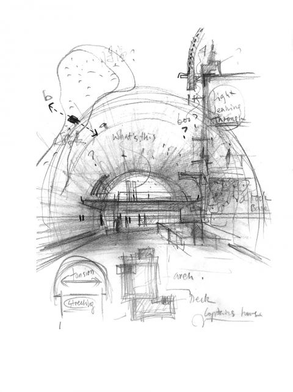
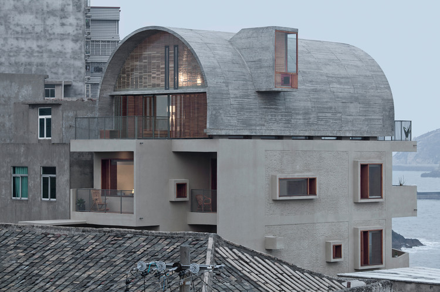

01 船长之家改造 通过新增12cm混凝土墙加固原有砖混结构，并以拱顶加建形成具有精神意义的家庭空间，使改造后的住宅在抵御海边恶劣气候的同时，赋予居住者新的生活尊严。renovation结构加固与空间重构一体化 船长之家改造后外观（推测为西立面）
02 基本信息 项目内容项目名称船长之家改造英文名称Renovation of the Captain's House建筑师 / 事务所直向建筑（Vector Architects）主持建筑师：董功地点福建省福州市连江县苔菉镇北茭村，中国国家 / 城市中国 / 福州连江建成年份 / 设计年份2017年1月建成；设计周期2016.01-2016.08建筑类型独立住宅改造（加建）用地面积未检索到可靠公开资料建筑面积470㎡（来源：直向建筑官网、ArchDaily）建筑高度未检索到可靠资料层数原二层加建三层，含阁楼夹层（平面显示三层+夹层，官方未明确层数）容积率未检索到可靠资料建筑密度未检索到可靠资料结构体系混凝土承重墙 + 旧有砖混结构（新增12cm混凝土墙复合原有砖墙）主要材料混凝土、樱桃木、竹钢、玻璃砖、肌理涂料业主 / 委托方私人业主，上海广播电视台东方卫星频道摄影 / 图纸来源摄影：夏至、陈颢、陈振强；图纸：直向建筑信息可信度高（官方+两个高质量建筑媒体+分析文章）主要依据来源直向建筑官网 (s1)、ArchDaily中文版 (s2)、gooood (s3)、有方 (s4,s5)、豆瓣青锋文章 (s6)指标说明：除建筑面积、结构体系和材料外，其他经济技术指标（用地面积、高度、容积率等）未从公开资料获得。
03 资料质量与证据密度 资料状态：sufficient是否有一级资料：是一级资料是否用于身份确认：是建筑专业媒体数量：4（ArchDaily、gooood、有方×2）图片处理状态：completed已覆盖分析项：concept、context、program、circulation、facade_material、structure_construction、user_experience、urban_relationship资料最充分的方向：设计概念、结构策略、空间格局、材料、拱顶分析资料明显不足的方向：经济技术指标（场地面积、高度）、施工详细节点、造价需要人工复核：无重大矛盾，但部分技术指标需进一步核实
05 场地信息表 场地维度与设计回应相关的信息场地区位福建连江县黄岐半岛东北端，与马祖列岛隔海相望，渔村密集区自然环境礁石海岸，常受海风、雨水侵蚀，潮湿易腐人文环境传统渔村，业主基督教信仰地形条件建筑建于礁石上，岩石脉络东西向垂直海岸道路与交通村内窄巷，主入口朝北，次入口朝东周边建筑特点2-3层传统民居，体量杂乱，建筑间距小建筑服务人群船长一家四口及节日来访亲友场地核心矛盾密集村落中如何兼顾隐私、海景、结构安全和空间品质场地资料整体较充分，但精确地形图、周边建筑高度等细节未公开。
06 诊断 来源明确：原有建筑砖混结构薄弱、漏水严重，无法满足当前生活需求，业主希望加建三层。海边潮湿腐蚀性气候是核心挑战。基于资料的归纳判断：业主对大海“既依赖又恐惧”的矛盾心理（青锋引用船长原话），成为设计需要在空间上回应的深层主题。
07 定位 来源明确：直向建筑表示希望改造“给一家人提供更多有质量的生活空间，赋予他们生活的尊严，同时也能成为他们家庭情感的载体”。基于资料的归纳判断：项目不追求宏大叙事，而是聚焦于普通家庭的具体生活，在有限的造价和结构条件下创造超越日常的空间品质。
08 策略 策略：结构加固作为设计起点，新增混凝土墙同时解决安全、加建和空间重组；窗系统家具将窗转化为媒介；拱顶加建整合结构、排水、景观和精神性。回应的问题：危险的原有结构、恶劣气候、有限面积和加建需求。对空间/形式/建造的影响：南墙完整封闭，东西通透；拱顶成为视觉和精神核心。
09 意象与表达 董功的草图明确将拱顶作为加建核心（s6记载）。项目名称“船长之家”本身就暗示了船、海洋与家的关系。拱顶被诠释为“灯塔”、“船”和“家庭教堂”，在村落中既融入又跳出。 船长之家黄昏外景，可见拱顶与村落关系
10 功能梳理 一层：入口门厅、厨房、餐厅、起居室；二层：主卧室、女儿卧室、书房；三层：多功能活动室（兼家庭礼拜）、阁楼。卫生间集中布置于北侧（由南面移动）。空间从上到下形成从公共到私密、从日常到精神的梯度。
11 布局逻辑 建筑沿东西向延伸，垂直海岸线，两端分别面对渔港和东海。南立面通过填补和延伸成为完整实墙，减少开窗以抵御风雨；东、西、北立面大面积开窗，引入海景和光线。平面中卫生间从最佳海景位移至邻居一侧，释放视线给主要房间。
12 形式构成 原有L形平面通过南墙补齐和西墙延伸形成规整长方体。上层拱顶以混凝土现浇，两侧由混凝土墙承重，以曲线收束体量。窗套外凸、厚度设计为家具，强化立面阴影与使用功能。阁楼位于拱顶内，由舷梯连接。 船长之家改造后外观（推测为西立面）
15 建造语言 骨架：原有砖混结构 + 新增12cm钢筋混凝土墙，共同承重；拱顶为混凝土现浇（s1,s2）。围合：南面实墙多，东西面落地窗为主（s1,s3照片）。地台：建于礁石上，具体基础形式未公开（缺失）。
19 方法 1：结构加固与空间重构一体化 面对的问题：原有砖混结构不安全、漏水；需加建但面积有限。具体做法：在室内侧新增12cm混凝土墙，保留原有砖墙；新结构允许局部拆改砖墙，重新安排功能。建筑效果：结构安全与空间重组同步完成，卫生间移位，主要房间获得海景和通风。相关图片/图纸：可迁移方法：改造中结构加固可作为空间重塑的契机，而非单纯的工程。
20 方法 2：窗系统家具（window-furniture） 面对的问题：海边多雨，窗易漏水；希望增强窗与人的互动。具体做法：窗套突出墙面，为开启扇遮雨；窗洞厚度设计成坐凳、桌面，与室内家具连成一体。建筑效果：窗成为“媒介”空间，增加了使用可能和观景仪式感。相关图片/图纸：可迁移方法：窗的深度可转化为功能空间，适用海岸或风景好的住宅。
21 方法 3：拱顶加建作为精神空间 面对的问题：加建三层的结构效率、排水、景观及精神表达。具体做法：采用混凝土拱顶，由两侧承重墙汇聚而成；内部设置夹层，两端开窗连接不同海景。建筑效果：拱顶快速排水、方向性景观；成为家庭礼拜空间——‘海上灯塔’。相关图片/图纸：可迁移方法：单一结构形态可同时解决多个问题，综合效益高。
22 方法 4：平面功能置换优化视线 面对的问题：原卫生间占据最佳海景面。具体做法：将一、二层靠海卫生间移到北侧靠邻居处，释放南、东向给客厅、餐厅、主卧。建筑效果：主要生活空间获得开阔海景，卫生间获得更好采光通风。可迁移方法：小户型改造中，功能位置调整即可大幅提升体验。
23 对我的设计启发 可迁移方法 1：将结构加固与空间设计整合，避免二次改造。可迁移方法 2：利用窗的深度创造多功能‘窗家具’，增加使用趣味和功能性。可迁移方法 3：拱顶可作为解决结构、气候、精神和标识性问题的综合手法。可迁移方法 4：在既有建筑中通过简单功能置换提升核心空间品质。不适合直接照搬的部分：拱顶的宗教隐喻需结合业主背景；窗家具的深度和材料需根据当地气候细化。可转化成的分析图：结构加固与空间重组关系图；窗家具类型与使用场景图；拱顶综合性能图解。
24 信息缺口与冲突 用地面积、建筑高度、容积率、建筑密度等经济技术指标全缺。层数：资料显示原二层加建三层，平面图中三层含阁楼，但官方未明确总层数，此处记为“三层+夹层”。结构体系明确无冲突。材料和施工细节较充分，但无详细节点公开。
26 Reference Sources 船长之家改造 - 直向建筑官网直向建筑 / Vector Architects船长之家改造 / 直向建筑 | ArchDaily 中文版ArchDaily 中文版船长之家改造 / 直向建筑 | 谷德设计网gooood / 谷德设计网视频首发 | 改造后的“船长之家”什么样？ – 有方有方 / Archiposition风语 船长之家 / 直向建筑 – 有方有方 / Archiposition